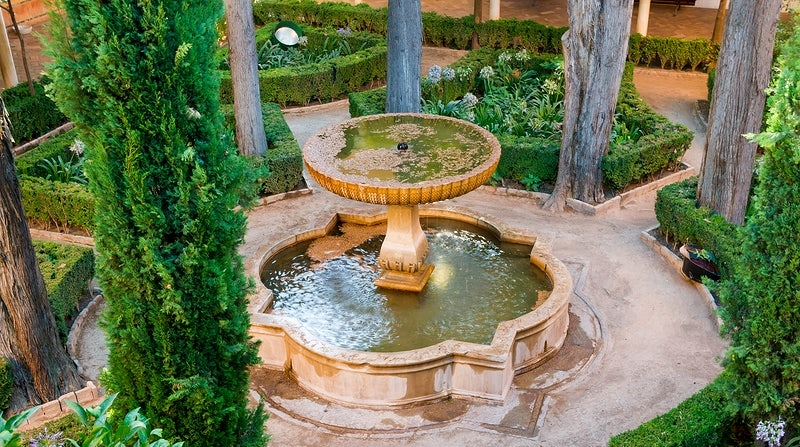

Giardini arabi
Gli Arabi: eredi dei Persiani
I resti delle antiche regalità persiane erano così suggestivi che gli Arabi ritennero di non aver mai visto nulla di paragonabile. Se ne appropriarono e decisero di crearne di simili. In questo modo, divennero gli eredi e i continuatori dei Persiani.
Cosa hanno ereditato? Innanzitutto, l'abitudine di costruire giardini su luoghi elevati; poi, il fatto che si trattava di spazi chiusi; infine - e questa era senza dubbio la cosa più importante - i legami, ormai indissolubili, che li univano al Paradiso celeste e li rendevano un simbolo tangibile della felicità.
Tuttavia, sebbene gli Arabi abbiano adottato queste forme preesistenti, le hanno anche notevolmente trasformate. Anche loro portavano dentro di sé un'immagine del Paradiso, ma non era la stessa dei seguaci di Zoroastro. Non era dominata dal problema della Caduta, dai concetti di redenzione, di somiglianza e di vittoria finale della luce sulle tenebre. La felicità a cui aspiravano era molto più semplice. Era radicata negli insegnamenti del Profeta e nelle dure condizioni di vita durante le loro lunghe peregrinazioni per il deserto.
Questa immagine del Paradiso corrispondeva alle aspirazioni che gli Arabi si erano tramandate di generazione in generazione durante i loro interminabili viaggi attraverso le sabbie. Per loro il Paradiso non poteva che essere l'opposto del deserto.
Perché i giardini portassero agli Arabi la felicità che si aspettavano, dovevano contenere tutto ciò che il deserto non conteneva. Innanzitutto l'ombra, che è la prova dell'esistenza delle cose. Poi la freschezza. Vegetazione rigogliosa per sfuggire al caldo. Acqua in abbondanza, per sfuggire alla sete. Un melodioso canto di uccelli per sfuggire al silenzio. Infine, colori, profumi, poesia e musica. I giardini arabi erano giardini di delizie: giardini verdi e recintati, ornati da fontane e ceramiche, da cui era severamente bandito tutto ciò che ricordava il deserto. Erano reazioni al deserto, reazioni alla privazione. In generale, si potrebbe dire che l'Arabo è un uomo del deserto che desidera un giardino, che cresce ascetico e muore di voluttà.